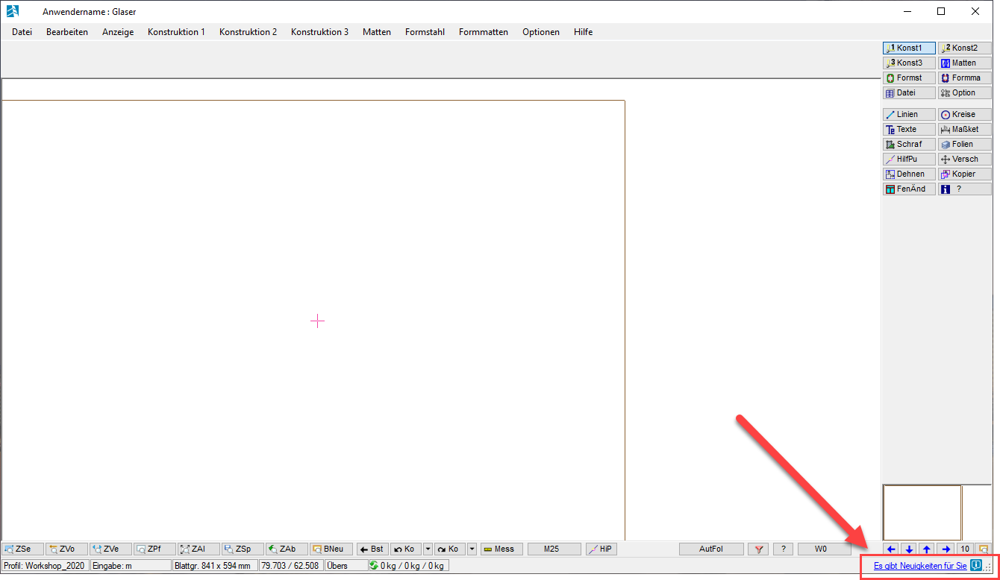

Über den Nachrichtenkanal informiert GLASER über aktuelle CAD-Themen und wichtige Ereignisse. Um den Nachrichtenkanal nutzen zu können, ist ein Internetzugang erforderlich.
·Falls Sie eine Firewall eingerichtet haben, kann es vorkommen, dass der Zugang zum Internet blockiert wird und der Nachrichtenkanal dadurch nicht aufgerufen werden kann. Konfigurieren Sie in diesem Fall die Firewall-Einstellung oder wenden Sie sich an Ihren Systemadministrator.
·Bei jedem Start des Konstruktionsprogramms wird im Hintergrund geprüft, ob es neue Nachrichten gibt. Danach findet die Prüfung in regelmäßigen Abständen statt.
·Der ISBCAD Nachrichtenkanal kann auch über die ISBCAD Startseite geöffnet werden.
Nachrichtenkanal öffnen
Der Nachrichtenkanal ist Bestandteil der Webseite www.glasercad.de und wird nach dem Anklicken des Links im Standardbrowser geöffnet.
Der Link zum Nachrichtenkanal ist in der unteren rechten Ecke der Programmoberfläche platziert.
 |
·Klicken Sie auf den Link "Es gibt Neuigkeiten für Sie" oder auf das Icon rechts daneben.
Der Nachrichtenkanal wird in Ihrem Standardbrowser geöffnet und der Status der Benachrichtigung wechselt zu .
Status |
|
Beschreibung |
|---|---|---|
|
Neue Nachricht verfügbar. |
|
|
Keine neue Nachricht verfügbar. Die Verlinkung zum Nachrichtenkanal funktioniert trotzdem. Der Nachrichtenkanal lässt sich somit jederzeit wieder aufrufen. |
Siehe auch: